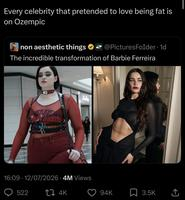

0

0
The European Union is considering major new restrictions on children's access to social media, including age limits, phased access, and an outright ban. "This is not about whether children can access social media," said European Commission President Ursula von der Leyen. "It is about when social media can access our children." The Verge reports: Social media platforms could also be forced to prove their services are not harmful before young people are allowed to use them. European Commission President Ursula von der Leyen said the bloc's executive arm could propose new legislation within months, after reviewing recommendations from a panel of experts released today.
The panel recommended using a phased approach, including "no screens at all" for children under 3, supervised internet use for those under 13, and some limits for older teens. It also said social media platforms should have to prove their services are safe to younger users, an approach von der Leyen said she supports. Von der Leyen said the Commission will consider the report and return with proposals "after the summer." Any legislation would still need approval from the European Parliament and the EU's 27 member countries before becoming law across the bloc.
Read more of this story at Slashdot.
A new Incogni survey suggests Americans are pulling back from social media, with more than half saying "maintaining an online presence feels like work" and 55% reporting they post less than they did five years ago. "The full study concludes that there's been a significant shift in public attitudes toward social media," reports PCMag. "Where it was once fun and relaxing, it's now growing dark and angsty..." From the report: As the chart shows, there's also a clear correlation with age. A full 60% of Gen Z respondents feel the pain of maintaining a social presence. Perhaps they have a niggling hope that they might still be discovered as an influencer? Those of us in the Boomer category are clearly more relaxed about it, with just 38% saying that maintaining a social presence feels like work. The survey quizzed respondents about how they feel when they don't keep up with checking their socials and, by extension, how they'd feel if they just plain quit. They were given choices, both positive (peace, relaxation, and relief) and negative (anxiety, fear of missing out, and discomfort).
Overall, positive reactions held slightly greater sway, with an average of about 21% compared with 19% for negative reactions. The Gen Y contingent accentuated that split, with 25% positive and 21% negative, while Gen X went even further, with 20% positive and just 13% negative. But the Gen Z group flipped the results, identifying 27% negative and 26% positive reactions to going without social media.
There's another force pushing folks away from the socials: increasing politicization. Of the survey's respondents, 44% agreed that political content is driving people away from social media, and only 20% disagreed. Among Gen Z respondents, the impetus was stronger: 48% agreed, and just 13% disagreed. These negative feelings associated with politics only serve to highlight the positive reactions to deleting your social media.
Are you posting less on social media than you did five years ago, and are you being more selective about who can see what you post? Then you're with the majority. More than half of the respondents answered yes to each of those questions. But would you ever parlay fewer posts into no posts (aka quit posting entirely)? When asked what it would take to finally get them to terminate a social media account, a die-hard group of one in six respondents said there's nothing that could make them quit. But more than half could picture quitting due to security concerns, and almost half accepted the possibility that harassment or hate speech could send them packing. Others cited the amount of time wasted on scrolling through social media and the mental health threats of doomscrolling.
Read more of this story at Slashdot.
Which jobs are most threatened by AI? "Programmers, software engineers and other tech industry employees," goes one common answer.
"But many economists are more concerned about a different, larger group of white-collar workers," reports the New York Times: customer service reps, bookkeepers, payroll clerks and HR specialists, "who fly under the radar but collectively account for tens of millions of jobs..."
They are spread across the country and throughout the economy, working in every industry, in big cities and small towns, at major corporations and mom-and-pop businesses... These jobs typically offer a middle-class salary or a pathway to achieving one — much as manufacturing jobs did for men before decades of globalisation and automation wiped many of them away... For now, such an outcome is a fear, not a forecast. Despite high-profile layoffs in tech and finance, there is little firm evidence that AI has hurt the labour market as a whole.
Economists have become increasingly convinced that disruptions are likely, but they say it is too early to know where or how widespread they will be. They remain broadly sceptical of claims that the technology will lead to mass unemployment in the near future. Some AI industry leaders have walked back such predictions in recent weeks. But given the extraordinary pace at which companies are adopting AI — and at which the technology is improving — economists say policymakers need to consider the potential effects on the labour market. And they say they are concerned that the public debate has focused too much on software engineers and a relative handful of other high-status careers — lawyers, consultants, economists — rather than the workers who could be most vulnerable...
Economists at Northwestern University recently recalculated measures of AI exposure based on the makeup of the total workforce, not just the people using the technology. Administrative and front-line roles, such as customer service representatives, rose to the top of the list. "The most affected jobs are secretaries, are routine clerks," said Michelle Yin, one of the working paper's authors. "They're not computer scientists or data scientists at all."
The article also includes this counterpoint from an economist at the University of Illinois who has studied earlier waves of white-collar automation: that like other disruptive technologies, AI likely will also create new jobs. So the possibility exists AI will make workers more productive and allow them to earn more. "I would be cautious about just focusing on what are we losing as opposed to what are we going to gain on the other side."
Read more of this story at Slashdot.
Linus Torvalds once said LLMs might bring a 10X increase to programmer productivity. But speaking at Open Source Summit India 2026, he now says that number was "not scientific,"
reports ZDNet. "That was pulled out of my ass number, obviously."
Today, he continued, "we're at the point where hopefully it creates more productivity than it takes away," but "we certainly saw more junk being generated by LLMs than we saw useful code up until the like early this year.... it can actually be a huge drain on resources when it takes humans a lot of effort to figure out that, hey, this machine-generated report was not true." Even now, he said, "most of the good ones require more than just the LLM," because "we've had to push back quite a bit... if you find a bug with an LLM, it's not enough to just ask the LLM to make a bug report and then throw it over the fence to us. We want to see a suggested patch; we want to see the human who ran the LLM act as a kind of back-and-forth."
Torvalds described many AI-generated patches as "mindless band-aid kind of patches... they may fix the immediate problem, but the kind of bug remains, and it just is waiting in the hallway to hit you in another place." For his own toy projects, he uses LLMs as prototypers: "I use them as a way to prototype things... quite often the code is not usable in that form, but it's a great way to try something out," while insisting that for kernel-level fixes, "LLMs, in my experience, have not been at that level yet."
Torvalds acknowledged that some AI-found issues have been "absolutely, stunningly, I mean, interesting in a painful kind of way," especially security problems that "show up in the technology press two days later." Despite the embarrassment, he said, "I'm very much not a shoot-the-messenger kind of person. I think we're much better off with LLMs finding bugs, even when they are embarrassing, and they are things that we should probably have found two decades ago."
Torvalds also said he's using AI "for my own toy projects... Every time I travel to some new place, and this is the first time I've been to India, I send the kids pictures of where I am, and for some strange reason, Godzilla seems to follow me around and gets added to those pictures."
ZDNet notes that Torvalds concluded, "There are many useful and less useful uses for AI," and "I think Godzilla is a great place to stop."
Thanks to Slashdot reader joshuark for sharing the article.
Read more of this story at Slashdot.
"Elon Musk and Sam Altman criticized each other in new posts on X," reports CNBC, "highlighting the billionaires' long-standing tussle over OpenAI's evolution."
This week, SpaceX released the Grok 4.5 generative AI model, while OpenAI debuted its own GPT-5.6 Sol. For days, Musk and Altman have hyped up their respective releases, but on Saturday the rivalry got personal. In response to a post about Apple filing suit against OpenAI on Friday over alleged theft of trade secrets, Musk wrote, "Scam Altman strikes again ...." Minutes after his post, Musk doubled down, writing, "He takes scamming to a whole new level." Next, Musk published a photo of Altman that included the words, "I'm doing this because I love it."
"By 'this' he means scamming," Musk wrote, including two rolling-on-the-floor-laughing emojis. Musk then replied to that post, writing, "He might literally love scamming more than any human alive!"
The flurry of social activity got Altman's attention. "[H]omeboy you're the one sellling public market investors on short-term space datacenters," Altman wrote in an X post of his own that garnered over 11 million views.
"We start flying them next year. Maybe you can come see them if your parole officer approves," Musk fired back.
Separately, Altman put Musk's fresh wave of attention in the context of OpenAI's fresh model release. "[T]here are a lot of benchmarks that suggest 5.6 sol is the best model in the world right now, but the most reliable way to tell is that elon is obsessed with me again," Altman wrote on X.
Reacting to another post, Altman wrote that he was "not afraid of apple, but i have tremendous respect for them. s-tier company," CNBC reports — leading to a sarcastic response from X's head of product. "Incredible trade secrets as well, some of the best."
And CNBC notes that Musk "replied with a face-with-tears-of-joy emoji."
Read more of this story at Slashdot.
Microsoft released its 2026 Environmental Sustainability Report showing that last year it matched its entire electricity consumption with renewable energy, reports The Register.
"The bad news is it also increased greenhouse gas (GHG) emissions by 25%" — mostly due to datacenter construction and a decision to stop purchasing some renewable energy certificates:
In 2020, Microsoft set itself the goal of becoming "carbon-negative" by 2030. Its own figures show emissions heading only upwards, from 13 million tons of CO2 equivalent in 2020, to 20 million tons in 2025. However, Microsoft estimates that without the carbon reduction initiatives it has already put in place, emissions would now stand at 34 million tons...
For the first time, Microsoft claims to have replenished more [water] than it withdrew during 2025, returning 14,278 million liters (3,771 million gallons). Elsewhere, the corporation says its Circular Centers program reused 92% of decommissioned servers and their components.
Read more of this story at Slashdot.
An anonymous reader quotes a report from The New York Times: A state-owned newspaper in China recently published a satellite image of a data center in Gainesville, Va., writing in English that the development of artificial intelligence posed a threat to Americans' physical and financial well-being. A comic strip made to look as if it had been published by a Maryland news outlet -- created with OpenAI's ChatGPT by people in China, the tech company said -- circulated on X this year, blaming data centers for soaring electricity bills. It showed a tycoon smoking a cigar and clutching bags of cash. A video shared on X by a known covert Russian influence operation questioned the viability of a data center that an American company, Firebird, is constructing in Armenia, the small Caucasus nation that has been a focus of Kremlin pressure. "The country's electrical grid instability may render it useless," the video's narrator says.
All are examples of a push by foreign adversaries to seize on what polls have shown is deep ambivalence -- verging at times on hostility -- about the spread of the data centers needed to power A.I. in the United States and elsewhere. China, Russia and, to a lesser extent, Iran have sought to use state media outlets to turn the controversy over data centers in the United States into "a domestic fracture point," according to a new analysis by Alethea, a threat intelligence company, which identified scores of articles and posts on social media this year. These campaigns, whose impact on public opinion remains to be seen, have raised alarms in Washington, where A.I. is seen as a top issue heading into this year's midterm elections.
Read more of this story at Slashdot.
"Git and email are the two really only tools I use," Linus Torvalds said at Open Source Summit India 2026. But ZDNet reports that he also shared his thoughts on Rust, C, and patch-checking tools:
"I use Google as a way to look things up." He added, "I'm unusual; most of the other maintainers end up using many more tools, and I think a lot of them are starting to use AI tools for patch checking," while he "works at a higher level. I work with people, not tools."
When asked about Rust both in Git and the kernel, he pushed back against hype: "I'm not sure Rust is going to take over the world. I still think Rust is very interesting, [but] I still find C to be a much simpler tool." Torvalds continued, "I'm much more excited about all the tools we have for verification of C," including "automated patch verification tools" and "automated email checking tools for patches like Sashiko." Summing up, Torvalds told the Mumbai audience: "I'm more of a hack-and-slash kind of person, and I still like the raw and simple power of C, and I don't think that's going to change."
Torvalds also warned against overestimating Rust's benefits: "Rust fixes a few easy bugs that you can make in C, but it does not fix the logic errors, right? It does not think for you, and when you write incorrect code, the language does not matter. The end result will be incorrect." On mixed C/Rust code bases, he pointed out that guarantees are limited: "The guarantees that Rust give you only apply in the Rust-only parts of your code base, and wherever you interact with C code, all bets are off," with most Rust code in Linux talking to "core kernel C code" that is "much better quality... because that code has been tested in every single environment."
At the same time, Torvalds pointed out, "some of our big and more high-profile bugs in the kernel lately have been logic errors" rather than the kind of memory errors Rust prevents.
"It was just bad programming, which sadly happens even in carefully maintained subsystems and important kernels that are supposed to be very secure."
Read more of this story at Slashdot.
"Japan's experimental reusable rocket took off and safely landed in a first test flight Saturday," reports the Associated Press, as Japan "seeks to achieve the technology key to cut launch costs and compete in the global space market dominated by SpaceX."
The RV-X rocket lifted off, hovered and moved horizontally before landing [watch the video here] during its less than one-minute flight at the Japan Aerospace Exploration Agency's Noshiro Testing Center in northeastern Japan, which was livestreamed by the NVS, a group of space fans...
Saturday's flight is a step forward for Japan in achieving the technology needed to develop a lower cost successor to the country's current mainstay, single-use H3 series.
Japan's test comes the same week that China recovered an orbital booster rocket for the first time.
Read more of this story at Slashdot.
America "is facing what's projected to become the largest labor shortage in its history," according to experts interviewed by the Washington Post:
Economists warn that the worsening labor problem, due in part to a skills shortage and population shifts, will be vast and reach beyond tech. It "could hobble the American economy for years to come," predicts the Georgetown University Center on Education and the Workforce. Lightcast, a labor market data company, calls it "the largest labor shortage the country has ever seen." JPMorgan Chase warns of a national security risk from "a pervasive talent deficit that constrains the nation's capacity to build, compete, and protect its interests." There will be shortages in the tens or even hundreds of thousands of nurses, physicians, teachers, engineers, pharmacists, mental health counselors, construction worker and airplane mechanics — jobs AI generally can't do...
Among the trends that have been leading to this moment: a mismatch between the careers college graduates are pursuing and the jobs employers are struggling to fill. Far fewer students are majoring in health care fields than are needed to meet demand, for instance. "We have pumped so many young people into business and finance" when what's really in demand are graduates in other fields, [said Ron Hetrick, Lightcast's principal economist]. "It's like a factory producing these workers like widgets, even though society is saying, 'We really don't need them.' And the factory just keeps pumping them out." But the principal reason for the looming workforce shortages is much more basic. A protracted decline in birth rates is coinciding with a record wave of retirements, data shows.
From 2024 to 2032, when the last baby boomers sign up for Social Security payments, more than 18 million college-educated workers will leave the labor force while fewer than 14 million enter it, according to the Georgetown center. Meanwhile, even as the number of people with associate and bachelor's degrees falls, the number of jobs requiring them will grow, the center forecasts. That will leave a gap of 4.6 million workers. Lightcast puts the deficit at an even higher 6 million... The effect of population shifts on the supply of talent, with or without degrees, has been compounded by a drop in the proportion of high school graduates choosing to go to college, a sharply reduced rate of immigration, and a growing number of Americans leaving the workforce altogether because of such issues as lack of child care, early retirement, incarceration and substance addiction, according to the Chamber of Commerce.
Three interesting statistics from the article:
U.S. college/university enrollment in 2023 was down by nearly 2 million students since its peak in 2010, according to the most recent data from the U.S. Education Department.
America's low birth rate since 2010 "means the number of college-age Americans is forecast to decline by another 13 percent through 2041."
South Dakota has just 41 workers for every 100 open jobs... while California and nine other states have more workers than jobs, the Chamber of Commerce found.
Read more of this story at Slashdot.
Long-time Slashdot reader necro81 writes: There are several companies, such as Tesla, trying to make semi trucks fully electric. The capital cost for such a truck, and the MW-scale infrastructure to recharge it, may be a hard sell for some operators. [IEEE Spectrum notes that's a charging infrastructure "that most freight corridors do not yet reliably provide."] But some companies are instead adding batteries and an electric motor to the semi-trailers that trucks haul behind them.
"The Nivalis Powered Trailer Kit centers on an electric axle [rated at 50 kilowatts-peak]... capable of both propulsion assistance and regenerative braking. It draws on a 60-kilowatt-hour, 400-volt lithium-ion battery pack charged from three sources: the axle itself during braking and deceleration, a full-rooftop array of photovoltaic panels generating up to 3.7 kilowatts-peak, and a 32-amp, three-phase AC grid connection available during parking stops."
This approach is more akin to a plug-in hybrid: the truck may still be diesel-powered, but the electric assist from the trailer allows the truck to run more efficiently. Replacing diesel with kWh can save operators money while also reducing emissions. This incremental approach may be more accessible and less capital-intensive than replacing the truck itself.
From the article:
The driver's only window into the system is a small display readable from the cab's side mirror that shows the system status and battery charge level. Nothing about the trailer's handling or licensing requirements changes. The partners project savings of up to 7,000 liters of diesel per trailer per year, which is enough to keep about 19 tonnes of carbon dioxide out of the air...
Trailer Dynamics, an Aachen-based company, has conducted field tests with BMW Logistics, DB Schenker, Duvenbeck, and Volkswagen Konzernlogistik, reporting average fuel savings of around 40% for diesel tractor combinations, substantially higher than the up to 18% reduction implied by the Nivalis projection... Trailer Dynamics prices its system between €145,000 and €195,000 and targets a payback period of no more than five years. Nivalis targets five to six years at current costs.
Read more of this story at Slashdot.
California drew more than $335 billion in venture capital funding this year, reports the Los Angeles Times, citing data released Thursday by PitchBook on private market funding:
Its next biggest competitor, New York, raised less than a tenth of California's total. Texas raised 1/40th of the amount... Although a campaign for a new tax on billionaires has convinced some ultra-rich residents to shift to other states and businesses often complain that high property and energy costs and an anti-business regulatory regime make it too tough to make money in the state, the inability of the top talent, companies and investors in AI to set up elsewhere shows California's enduring attraction.
The state's economy grew 5% last year to a record $4.25 trillion, making it larger than every country other than the U.S., China and Germany. It is home to nearly 400 billion-dollar startups — more than any other state, according to CB Insights... Among metropolitan regions, Los Angeles ranked behind only Silicon Valley and New York, which attracted $98 billion and $11.5 billion in venture investment, respectively... Investors poured in nearly $8 billion across 207 deals in the Los Angeles, Long Beach, and Santa Ana metro areas, up 28% from a year earlier, according to PitchBook...
Nearly 90% of invested dollars [in California] went to AI firms, up from last year, when around 65% of new funds were allocated to AI. "If you're a tech company and you're not an AI company, you have a very, very difficult opportunity ahead of you to raise capital," Stanford said.
Read more of this story at Slashdot.
The CEO of SK Hynix, one of the three largest DRAM producers, predicted to Reuters that the memory industry will see its "worst-ever" supply shortages in 2027, reports the hardware/gaming news site Wccftech:
SK Hynix has also forecasted that, given the current market demand, they will fall way short of fulfilling the market demand, and that will continue beyond 2030. The comments from SK Hynix are in line with what Samsung and Micron executives have already said. Samsung has warned of 2027 being the worst year in terms of shortages and that things will continue this way till 2028 and beyond. Meanwhile, Micron has said that the current shortages are only the "first innings" and that both DRAM/NAND supply will be tight, as they are only able to meet 40-50% of the total market demand in the coming years.
Heightened demand from AI customers and multi-year agreements further put pressure on the market. The big three DRAM makers have already prioritized premium DRAM segments such as HBM and LPDDR5X, while commodity memory such as DDR5, DDR4, and entry-level LPDDR RAM has taken a back seat. While these have boosted the profits of SK Hynix, Micron, and Samsung, they have devastated the consumer segment, which is facing the worst kind of price hikes that are affecting all sorts of components and platforms, including PCs, Smartphones, Consoles, etc...
SK Hynix, like Samsung and Micron, is also preparing to embark on a multi-year and multi-billion dollar expansion plan with new fabs and facilities being laid out across South Korea. SK Hynix is also considering the construction of Fabs in the US, Japan, and Southeast Asia, though the final plans are yet to be cemented. Micron recently started construction of its new facility that will be used for DRAM production. As SK Hynix proudly marks its Nasdaq debut, its CEO's sobering forecast serves as a clear reminder: the memory industry is entering its most challenging chapter yet. With 2027 poised to bring the worst supply shortages in history and tight conditions likely persisting beyond 2030, the AI boom is reshaping the entire semiconductor landscape.
Read more of this story at Slashdot.
The Wall Street Journal says "an intense 27-year-old activist who had been leading sit-ins at OpenAI to protest the dangers of AI" was just part of a larger movement.
"The Bay Area's AI boom is drawing young disillusioned men and women to join the fight against it. They are upending their lives and leaving behind careers for think tanks, nonprofits and street protest groups."
Their cause is now riding a surge of anti-AI backlash. Many Americans are souring on the technology amid mass layoffs, data center sprawl, reports of chatbot-fueled attacks by unstable users and hacking tools that have panicked cybersecurity professionals. Seventy percent of U.S. adults believe AI will cost jobs, and 55% believe it will do more harm than good in their daily lives, according to a recent Quinnipiac University poll. But for activists on the front lines, the driving fear is often more dramatic: human extinction. They cling to dire predictions, like Geoffrey Hinton's. The Nobel laureate, dubbed the "godfather of AI" for his work on artificial neural networks, warns of a 10% to 20% chance AI will wipe out humans.
At its most extreme and troubling end, some believe they must stop an AI apocalypse by any means necessary. In April, an unknown assailant fired 13 shots at the home of an Indianapolis councilman, leaving a note: "no data centers." That same month, authorities arrested a 20-year-old Texas college student for an attack on OpenAI CEO Sam Altman's home in San Francisco, and charged him with attempted murder and arson. The student was carrying an anti-AI document with a section on "our impending extinction," according to a federal criminal complaint. He has pleaded not guilty and his lawyers have said his actions appear to have been driven by an "acute mental-health crisis, not a desire to harm."
Read more of this story at Slashdot.
"While KDE and GNOME dominate the landscape, a relative newcomer is starting to make waves with features other desktops still don't fully support," argues XDA Developers:
Linux 7.0 was the first release of the kernel to officially support Rust, but COSMIC has been all-in on Rust since the very beginning, and COSMIC 1.1 finally stripped all the leftovers of C language from the desktop. It no longer has any traces of Nautilus (the GNOME file manager), and then there's now a COSMIC-native system monitor to replace the GNOME System Monitor, so you have even fewer chances of being afflicted by C-related problems. [The article calls COSMIC's system monitor "much better at showing detailed information about everything from processes to network and disk usage compared to the GNOME and KDE alternatives."]
Stacking Windows
As someone who used to love following Windows news, one of the most disheartening announcements was when Microsoft gave up on Sets, a feature that essentially turned every app window into a tab you could combine with other apps in the same window. I never thought I'd see that feature again, until COSMIC came along. Simply called "stacking", COSMIC has a feature that is exactly what Sets was supposed to be, though this time, you have more control. By default, apps still open in their proper, typical windows, with a title bar as you'd expect. But if you do want to combine multiple apps into one, you can right-click the title bar (or press Super + S) to enable stacking for that window. Then, simply drag another window over that one to start stacking them as tabs. This essentially gives you a whole new way to create "workspaces", as you can have a single window with all the tools you need, so you don't need to jump between different windows all the time, and you can keep a given window focused on a specific workload, but have multiple apps within it. It's a great reminder of what Microsoft took from us, too.
Tiling, But On Demand
Tiling windows is one of those features some power users simply love, and yes, there are ways to make it happen on KDE and GNOME with third-party apps or extensions, but those aren't ideal. It's an extra step to set them up, and very often they don't play nice with all the features those desktops offer, especially as new updates come out and those tools may have a hard time keeping up with the development of the desktops themselves. COSMIC is fantastic because not only does it have built-in window tiling, it's entirely controllable by the user. You can set any workspace to use tiling or floating windows depending on your preference, all completely independent of each other, and you can also choose the new default behavior for new workspaces so things are always tuned to your preferences. You can turn tiling on or off for a given workspace easily, and of course, even while tiling is on, you can allow certain apps to ignore it and still float above others. Not all these capabilities are exclusive to COSMIC, but to have this kind of feature built in with this level of control is still leagues better than anything KDE or GNOME offer in this regard.
The article argues COSMIC also makes customization extremely simple without stifling your options (like tweaking color options for your desktop). "This desktop environment just keeps getting better, and it's quickly establishing itself as a major competitor to long-standing alternatives."
Read more of this story at Slashdot.
David DiMolfetta / Nextgov/FCW : Doc: DHS analysts twice dismissed signs of intruders inside the DHS' network, first detected in May, as harmless activity before confirming a breach in June — Suspicious activity on the Homeland Security Information Network, which is being used to support World Cup games around the U.S., was first detected around mid-to-late May.
Gene Maddaus / Variety : A coalition of 12 states led by California files an antitrust lawsuit to block Paramount's WBD merger, alleging it lessens competition in three markets — A coalition of 12 states filed an antitrust lawsuit on Monday to block the merger of Paramount Skydance and Warner Bros. …
Lily Mae Lazarus / Fortune : London-based Valarian, which allows companies to use US cloud providers for AI workloads but retain control of their data, raised a $50M Series A led by NEA — Max Buchan started advocating for infrastructure sovereignty when, as he puts it, “globalization and Davos were still cool.”
Kurt Schlosser / GeekWire : Seattle-based Augmodo, whose AI-powered “Smartbadges” worn by employees track shelf inventory, raised $21M led by TQ Ventures at a $350M valuation — Augmodo, the Seattle startup that straps AI-powered cameras onto retail workers to track store shelves, has raised $21 million …
Ben Weiss / Fortune : Gauntlet, which helps institutions and crypto companies allocate their digital assets, raised a $125M Series C from Japanese financial conglomerate SBI Holdings — A startup founded during the early days of DeFi is now backed by a financial giant. Gauntlet, which helps institutions …
Shilpi Jain / Counterpoint Research : Global smartphone shipments fell 11% YoY in Q2 to the lowest Q2 levels since 2013 amid the DRAM and NAND shortage; Samsung returns to #1 with a 24% market share — - Global smartphone shipments fell 11% YoY in Q2 2026 reaching the lowest second-quarter levels since 2013 as the DRAM and NAND shortage intensified.
Ryan Vlastelica / Bloomberg : Apple's stock is up 16% since June 25, adding ~$650B in market value and pushing shares back to record territory, as investors flee an AI stock selloff to Apple — Investors are flocking back to Apple Inc. as nervousness about artificial intelligence spending weighs on the stocks of chipmakers and cloud-computing giants.
Maggie Eastland / Bloomberg : Sources: the US estimates unauthorized distillation costs US AI labs up to $6B/year; Silicon Valley told the White House it could become an existential threat — Anthropic and OpenAI's warnings about “adversarial distillation” are reinvigorating one of the oldest debates in Silicon Valley.
Mark Gurman / Bloomberg : Source: OpenAI still believes it is on track to unveil its first device in 2026 and release it in 2027; Apple's lawsuit may complicate hiring and supply chains — Apple Inc.'s lawsuit accusing OpenAI of systematically stealing its intellectual property threatens to disrupt …
Robert Scammell / Business Insider : Anthropic hires Tom Blomfield, a Monzo co-founder and one of the biggest names in UK tech, to join its compute team; he is taking a leave of absence from YC — The AI talent wars aren't letting up — and neither is Anthropic's big-name hiring spree. — The AI startup has hired Tom Blomfield …
Financial Times : Intel plans to invest €5B to expand chip manufacturing at its Leixlip facility in Ireland; in 2025, Intel canceled a planned €30B factory in Magdeburg, Germany — Move strengthens Dublin's role in Europe's bid to secure advanced semiconductor manufacturing
Ben Casselman / New York Times : Nearly 200 economists, including 15 Nobel laureates and Anthropic's Jack Clark, sign a letter titled We Must Act Now, warning of rapid AI-led job displacement — Nearly 200 economists signed a letter calling for policymakers to do more to understand and respond to potential A.I. disruptions.
Henry Siu / The Information : Samsung says it now aims to begin operations at its first chipmaking plant in South Korea's Yongin by 2029, bringing the timeline forward from 2030 or 2031 — Samsung Electronics aims to begin operations at its first chipmaking plant in the city of Yongin, south of Seoul, by 2029 …
Riley Griffin / Bloomberg : Meta says it will spend an extra $40B on its nearly 4,000-acre data center campus in Louisiana, aiming for 5GW+ of compute, pushing its total spend beyond $250B — Meta Platforms Inc. has committed to spending an additional $40 billion on its sprawling data center campus in Louisiana …
Politico : The EU blacklists Russian intelligence group members it says were responsible for spying on and hacking targets across the EU and Ukraine from as early as 2010 — Moscow's Federal Security Service is behind the cyber espionage and sabotage campaigns, EU says.